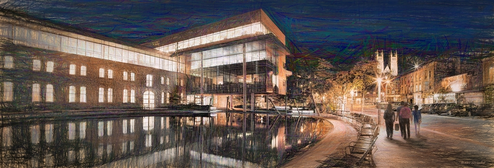

About
Ethan Wang - wange@uoguelph.ca
Guelph City Hall - By Alex Krajewski
Hello, I'm Ethan Wang, a third-year Computer Science student at the University of Guelph. This website serves as a snapshot of my journey as a software developer, featuring a collection of my favorite personal projects.
Projects
Experience
-
Provided frontline IT support for hundreds of city employees, demonstrating a strong commitment to addressing their technical issues promptly and effectively.
Edited and maintained the SharePoint website, ensuring up-to-date content and seamless functionality for users. Collaborated with teams to implement necessary changes and updates.
Spearheaded the discovery and implementation of a key licensing script, resolving licensing-related issues that impacted a significant number of city employees. Played a crucial role in ensuring compliance and seamless operation of software across the organization.
Resolved a critical Chrome script issue affecting the Cisco Finesse software, which was causing abrupt user disconnects for hundreds of city employees. Collaborated with cross-functional teams to pinpoint and rectify the script-related challenges, ensuring uninterrupted workflow for end-users.
Prioritized the rapid resolution of issues to minimize the impact on city employees, demonstrating a keen understanding of the importance of IT functionality in daily operations.
Collaborated effectively with colleagues and relevant stakeholders to address and resolve technical challenges, emphasizing teamwork in achieving successful outcomes. Communicated clearly and transparently with users, keeping them informed throughout the resolution process and maintaining a positive user experience.
-
Resolved Windows and Office product issues, as well as hardware challenges on devices like printers and laminators, ensuring minimal disruption for users.
Installed and serviced printers, servers, network devices, and user systems, contributing to seamless hardware functionality.
Applied technical expertise to troubleshoot and resolve software and hardware issues promptly, fostering a proactive IT support environment.
Conducted routine maintenance and implemented system upgrades, ensuring optimal performance and security.
Collaborated with teams and vendors, adhering to industry best practices and security protocols for a reliable IT environment.